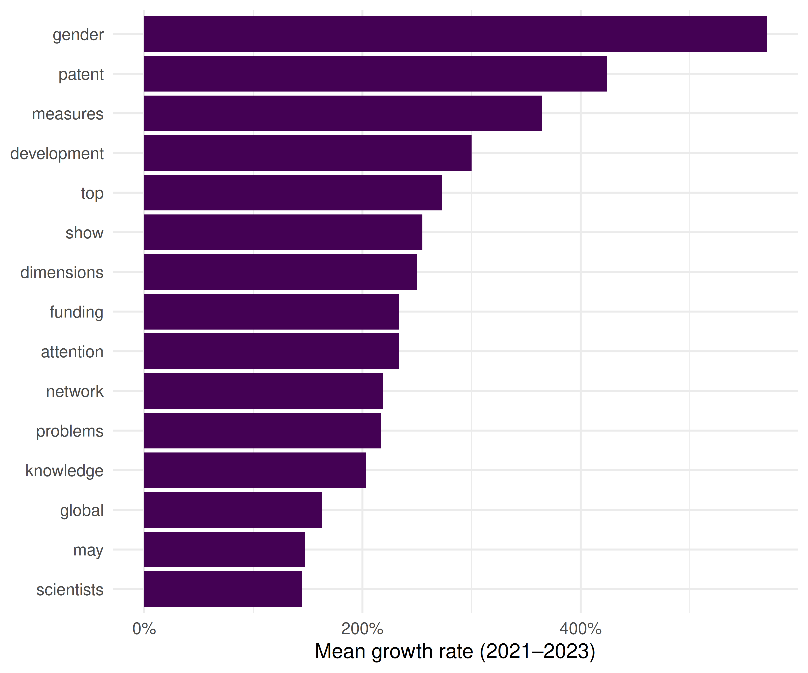
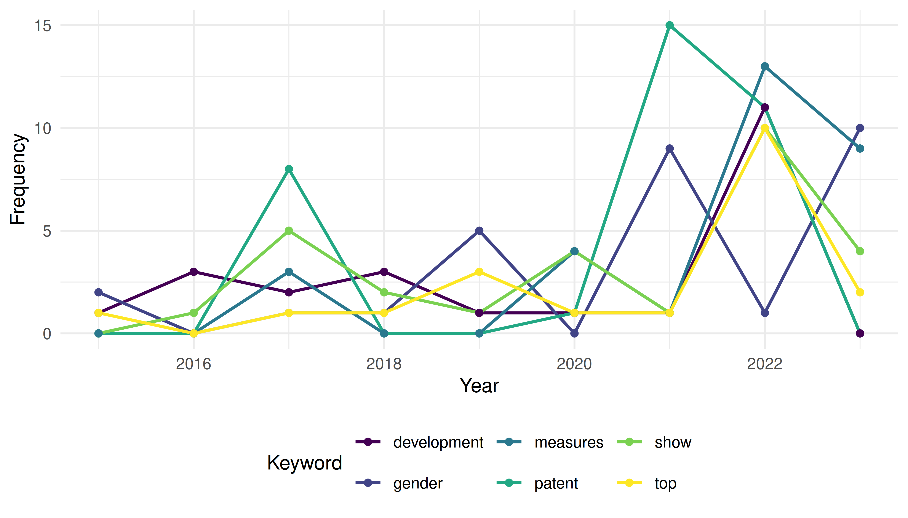
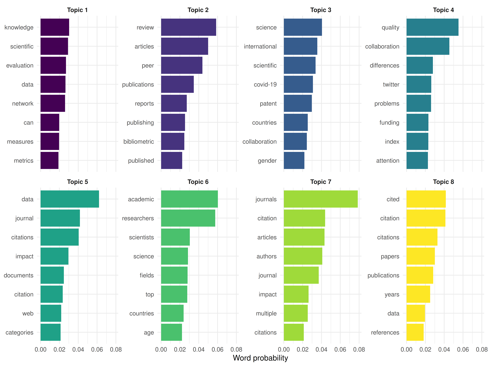
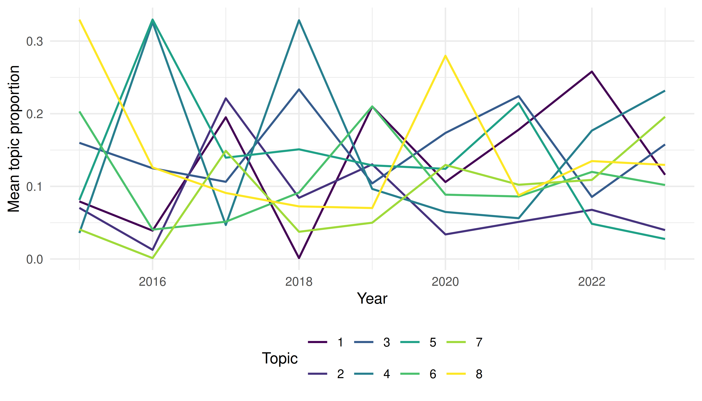

42 Case Study 5: Detecting Emerging Topics
R. Heller · Date: 2026-05-09 · Last changed: 2026-10-30
42.1 Objective
Identify emerging topics in scientometrics research (2015–2023) using keyword burst detection and topic modelling, and validate findings against known developments in the field.
42.3 Data acquisition
works <- fetch_openalex(
entity = "works",
primary_location.source.id = "S148561398",
from_publication_date = "2015-01-01",
to_publication_date = "2023-12-31",
type = "article",
options = list(sample = 600, seed = 42)
)
text_df <- works |>
filter(!is.na(abstract), nchar(abstract) > 50) |>
transmute(
doc_id = id,
text = paste(display_name, abstract, sep = ". "),
year = year(publication_date)
)
cat(glue("Documents: {nrow(text_df)}\n"))#> Documents: 12742.4 Keyword burst detection
corp <- corpus(text_df, docid_field = "doc_id", text_field = "text")
docvars(corp, "year") <- text_df$year
toks <- tokens(corp, remove_punct = TRUE, remove_numbers = TRUE) |>
tokens_tolower() |>
tokens_remove(stopwords("en")) |>
tokens_remove(c("study", "paper", "results", "research", "analysis",
"also", "however", "using", "based"))
dfmat <- dfm(toks) |> dfm_trim(min_termfreq = 10, min_docfreq = 5)
kw_by_year <- quanteda::convert(dfm_group(dfmat, groups = year), to = "data.frame") |>
pivot_longer(-doc_id, names_to = "term", values_to = "count") |>
rename(year = doc_id) |>
mutate(year = as.integer(year))
growth <- kw_by_year |>
group_by(term) |>
filter(sum(count) >= 20) |>
arrange(year) |>
mutate(growth = (count - lag(count)) / pmax(lag(count), 1)) |>
ungroup() |>
filter(!is.na(growth))
recent_growth <- growth |>
filter(year >= 2021) |>
group_by(term) |>
summarise(mean_growth = mean(growth), total = sum(count), .groups = "drop") |>
filter(mean_growth > 0) |>
arrange(desc(mean_growth))
recent_growth |>
head(15) |>
mutate(term = fct_reorder(term, mean_growth)) |>
ggplot(aes(x = mean_growth, y = term)) +
geom_col(fill = palette_sci(1)) +
scale_x_continuous(labels = scales::percent) +
labs(x = "Mean growth rate (2021–2023)", y = NULL) +
theme_sci()
Figure 42.1: Top 15 fastest-growing keywords (2021–2023).
42.5 Keyword trajectories
emerging_terms <- recent_growth |> head(6) |> pull(term)
kw_by_year |>
filter(term %in% emerging_terms) |>
ggplot(aes(x = year, y = count, colour = term)) +
geom_line(linewidth = 0.8) +
geom_point(size = 1.5) +
scale_colour_manual(values = palette_sci(length(emerging_terms))) +
labs(x = "Year", y = "Frequency", colour = "Keyword") +
theme_sci()
Figure 42.2: Temporal trajectories of selected emerging keywords.
42.6 Topic modelling
dtm <- quanteda::convert(dfmat, to = "topicmodels")
lda <- LDA(dtm, k = 8, control = list(seed = 42))
lda_topics <- tidy(lda, matrix = "beta") |>
group_by(topic) |>
slice_max(beta, n = 8) |>
ungroup()
lda_topics |>
mutate(term = reorder_within(term, beta, topic)) |>
ggplot(aes(x = beta, y = term, fill = factor(topic))) +
geom_col(show.legend = FALSE) +
facet_wrap(~ paste("Topic", topic), scales = "free_y", ncol = 4) +
scale_y_reordered() +
scale_fill_manual(values = palette_sci(8)) +
labs(x = "Word probability", y = NULL) +
theme_sci(base_size = 9)
Figure 42.3: Top terms per LDA topic.
42.7 Topic prevalence by year
doc_topics <- tidy(lda, matrix = "gamma") |>
left_join(text_df |> transmute(document = doc_id, year), by = "document")
topic_by_year <- doc_topics |>
group_by(year, topic) |>
summarise(mean_gamma = mean(gamma), .groups = "drop")
ggplot(topic_by_year, aes(x = year, y = mean_gamma, colour = factor(topic))) +
geom_line(linewidth = 0.7) +
scale_colour_manual(values = palette_sci(8)) +
labs(x = "Year", y = "Mean topic proportion", colour = "Topic") +
theme_sci()
Figure 42.4: Topic prevalence over time.
42.8 Key findings
- Emerging keywords align with known developments: open science, AI/machine learning applications, equity and diversity, and preprints.
- Topic evolution shows gradual shifts in emphasis rather than abrupt changes, consistent with a mature field incorporating new tools.
- Growth rates should be interpreted cautiously: terms with low baseline frequencies can show high percentage growth from small increases.
- Validation: the topics identified by LDA correspond to recognisable subfields, lending credibility to the unsupervised approach.
42.9 Lessons learned
- Combining keyword growth rates with topic models provides complementary perspectives: growth rates capture individual terms, while topics capture thematic clusters.
- Database coverage growth can create artefactual “emergence.” Always normalise by total corpus size.
- Emerging topics in scientometrics mirror broader trends in science policy (open access mandates, equity initiatives, AI adoption) (Kleinberg 2003).